02 / PERSONAL WORK
OFF THE
SYLLABUS.
A selection of my illustrations and photographs outside this Web Design course.
PROJECT 01 / CHARACTER ILLUSTRATION
Pink-haired character study
A character illustration shown in two poses. The pink hair, loose shirt, and white mask bring the two drawings together.
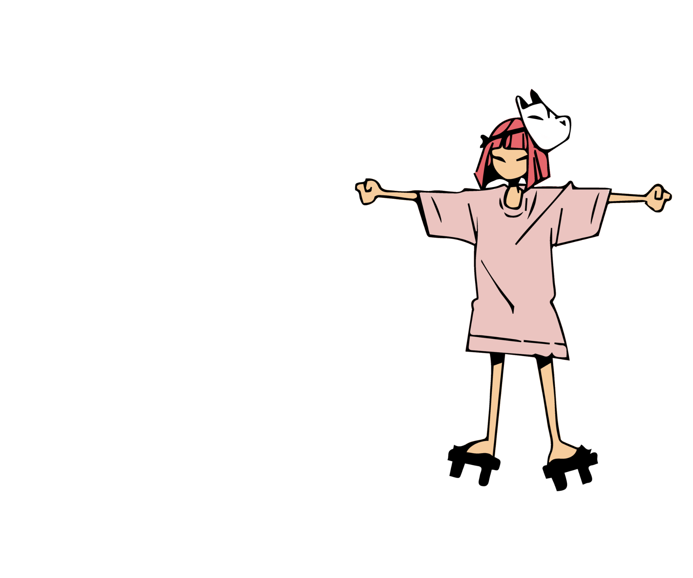
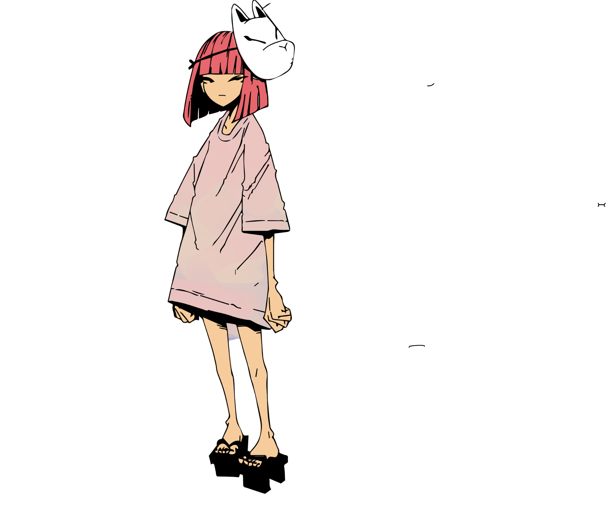
Click any image to open the full picture.
PROJECT 02 / FANTASY CHARACTER ART
Dark fantasy character studies
Two fantasy character illustrations exploring costumes, silhouettes, and small details. Dark clothing contrasts with the brighter hair, skin, and accessories.
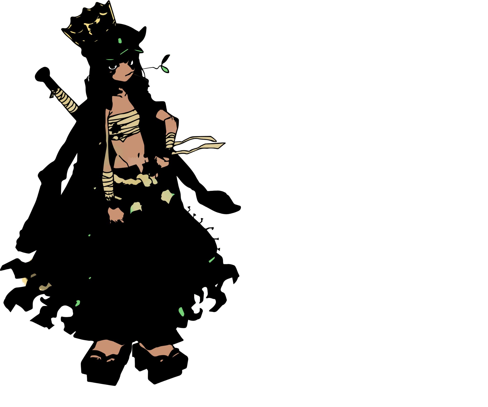
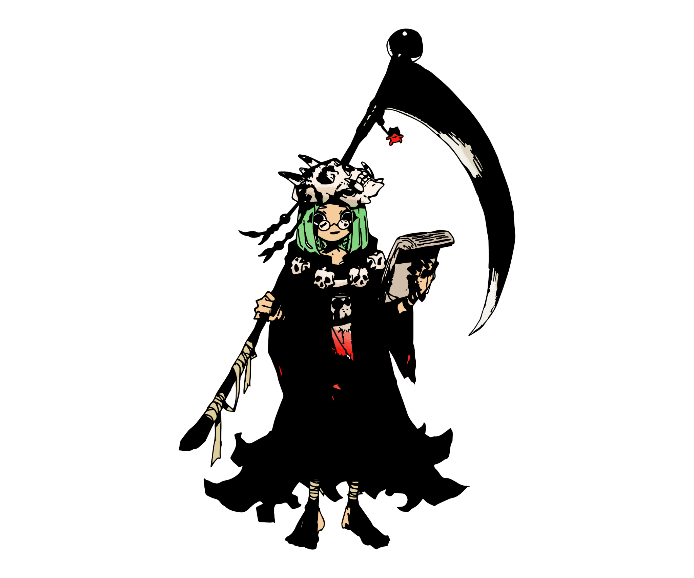
PROJECT 03 / CHARACTER ILLUSTRATION
Halo and silhouette
A dark character illustration with a bright halo. The light accents help separate the figure and its accessories from the dark clothing.
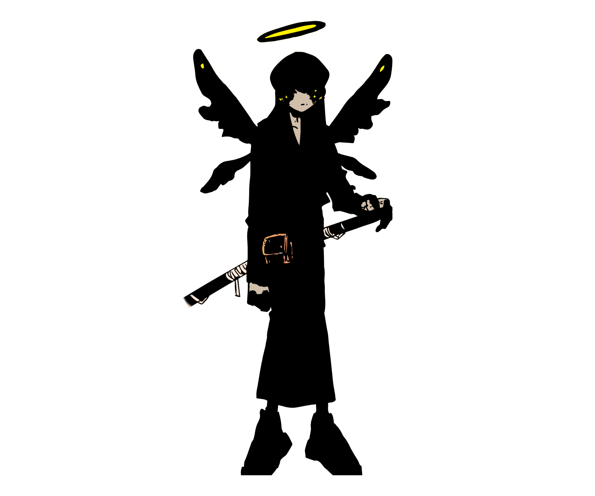
PROJECT 04 / PERSONAL PHOTOGRAPHY
Everyday frames
My photographs of commutes, city views, sunsets, and everyday subjects. I like how light and framing change the mood of an ordinary scene.
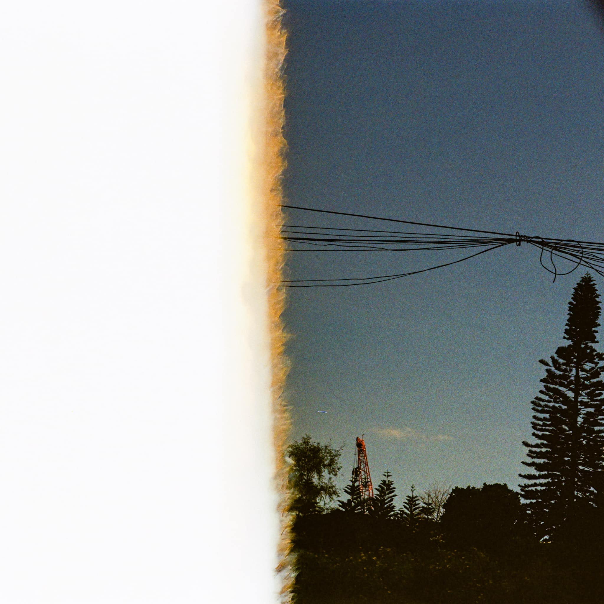
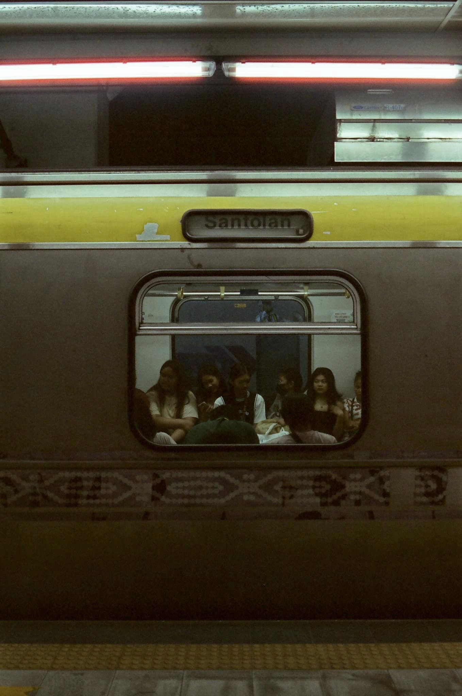
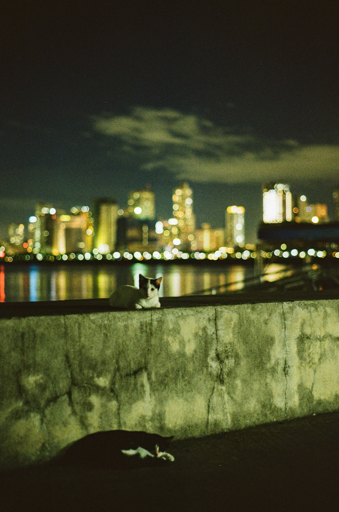
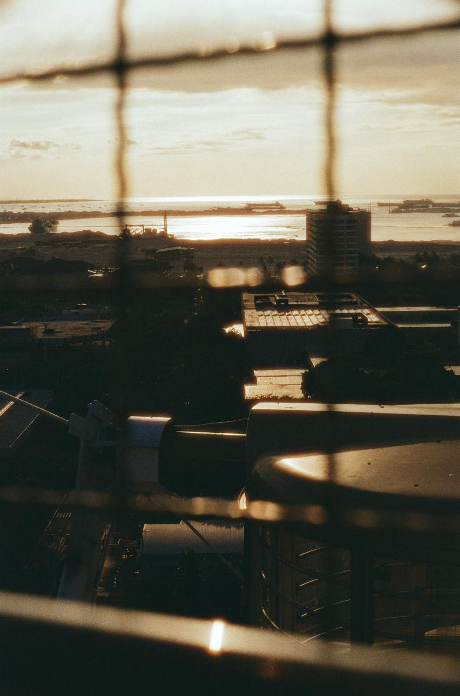
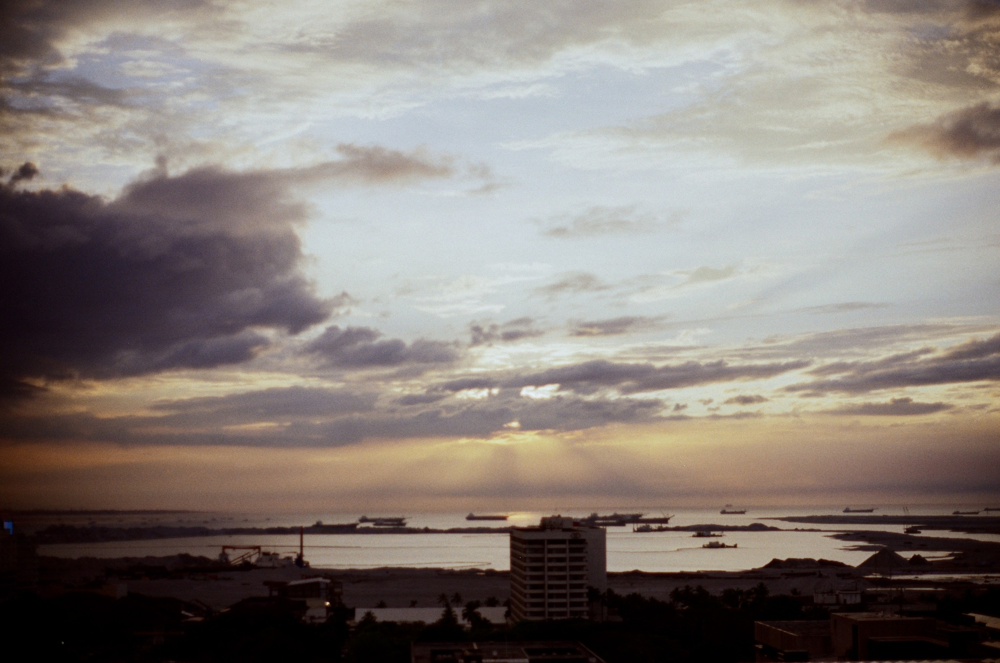
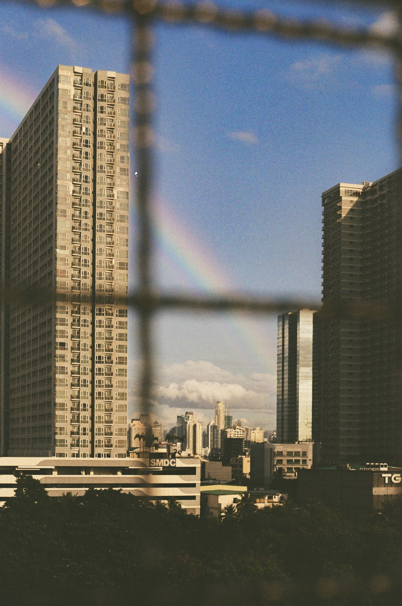
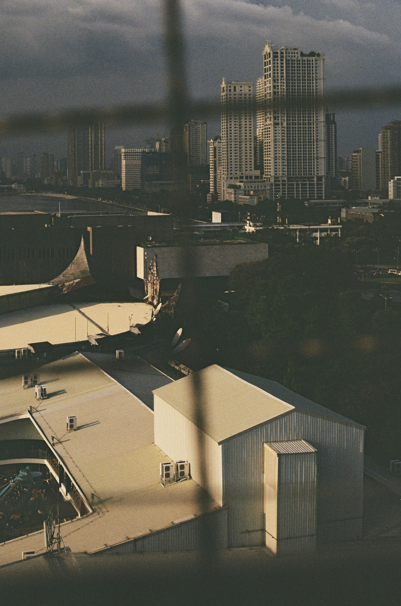
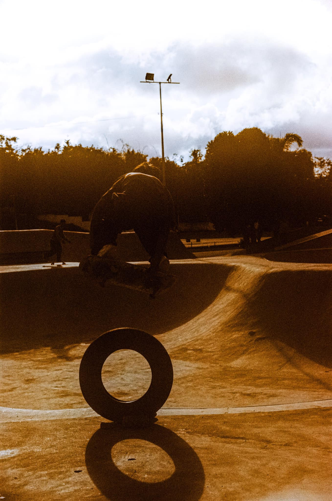